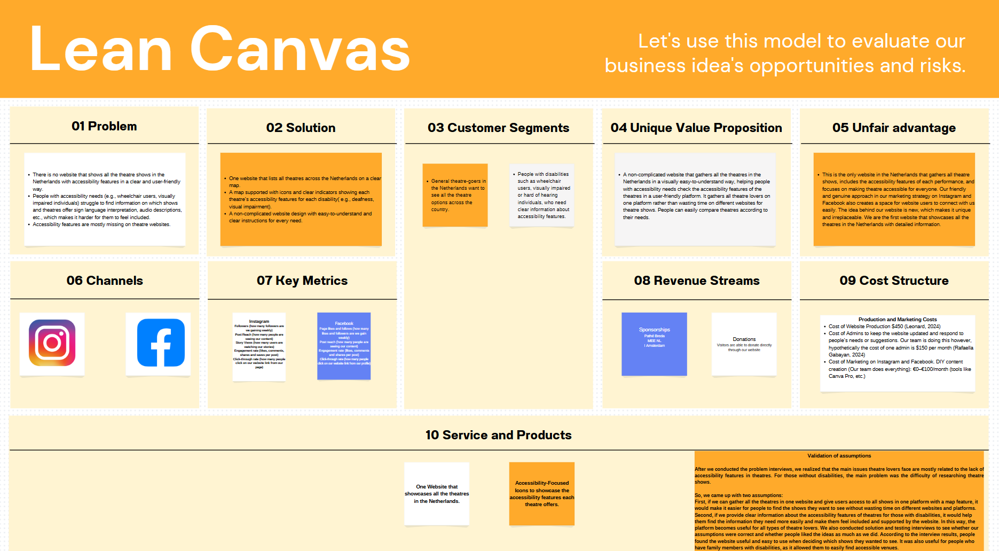

General Information
This branded website is publicly available at https://theater-lovers.github.io/Proseetos/index.html
This website was created by
- Rowena Kreling (ID: 235357)
- Lucas Gomes (ID: 232481)
- Aylin Kaya (ID: 247256)
Content
Please clarify here the match between students and pieces of content. Make sure that you provide a link to the correct page within the website
| # | Student ID | Value | Name and link of content |
|---|---|---|---|
| 1. | 235357 | Accessibility | production, content, management |
| 2. | 232481 | Passion | content, marketing, management |
| 3. | 247256 | Community | content, marketing, management |
Production
Design Elements
Please provide a list of design elements alongside their justifications:
-
- #EE7622 We chose red and blue because they are the best contrasting colors for colorblind people, and we are trying to be an inclusive, accessible brand
- #00406B The reason we chose these specific shades is due to the disability pride flag, these are the extact shade of red and blue that is being used on the disability pride flag
- #00406B We needed one more contrasting color for the header and some other elements so we asked chat-gpt what would be the best color based upon the shades of pink and red, and it gave us this color
- We chose the fonts Open Dyslexic because it's one of the few fonts that for people with a reading dysability (for example dyslexia) can read easily, we also tought it was a fun and memorable font. The second main font we choose to use is Lexend. Lexend fonts are intended to reduce visual stress and so improve reading performance. Initially they were designed with dyslexia and struggling readers in mind
- User interface patterns:
Grid Layout The websiteuses a clean layout where things are organized into neat boxes and sections. This makes everything look more put together and easier to follow. Designers call this a “grid layout,” and it helps people find stuff quickly.
Hero Section The prominent banner at the top serves as a hero section, immediately capturing user attention. This pattern is effective for highlighting key messages or calls to action.
Navigation Bar There’s a simple menu at the top of the page that lets you click to different parts of the site. This is super common and makes it easy for people to get around.
Call to Action Buttons Buttons like "Donate," "Learn More," and "Get Started" are strategically placed to guide user interactions. These CTAs are designed to stand out, encouraging user engagement.
FAQ Toggle In the FAQ section, when you click on a question, the answer appears underneath — and when you click again, it closes. This is called an accordion toggle. It's great for showing a lot of info without overwhelming the page.
External Links Some links lead to outside sites. These are usually highlighted or styled differently so you know you’re about to leave the page.
Custom Fonts The site uses custom fonts like Open Dyslexic (or similar). That’s part of making the site more accessible, especially for people with reading differences. - The structure of the navigation and content:
Clear Page Sections: Each page covers one topic:
Home = intro and mission
Locations = list of inclusive theaters
FAQ = common questions with toggle answers
Donate = ways to support the cause
About = who made the site and why
Consistent Layout: No matter what page you’re on, the menu (navigation bar) is always at the top, and the style stays the same. That’s consistency, and it helps users feel confident navigating the site. At the bottom of the site, there’s a footer with extra links and possibly contact info. This is a common place to add things that aren’t the focus but are still useful. - Why this works:
Consistency: Same colors, fonts, and structure across the site
Hierarchy: Bigger text and buttons help show what’s most important.
Affordance: Buttons and links look like they can be clicked.
Accessibility: Font choices, color contrast, and clean layout help everyone use the site, including people with disabilities.
Progressive Disclosure: FAQ toggles only show info when you want it. - How does website design fit the values and personality of the brand?
Brand Values: Accessibility, Passion for Inclusive Art, Community Building
Personality: Friendly, inclusive, modern, clear, and welcoming
Website Design Fit:
Accessibility: Use of the Open Dyslexic and Lexend fonts directly supports readability for people with dyslexia and visual stress.
Color choices (like #ce7280 and #79c1e0) are chosen with color blindness in mind, and even reference the Disability Pride Flag — showing attention to visual inclusivity.
Community-centered content like team bios, values, and a call to “Leave us a message” supports a welcoming tone.
Icons for accessibility and clear labels on navigation and contact methods help all users feel included and understood. - How does website design fit the marketing and communication strategy?
Marketing Strategy Highlights:
Platforms: Instagram and Facebook
Goals: Reach, Affect, Response
Tone: Personal, visual, community-based
Website Design Fit:
Visual-first layout (icons, color blocks, map, hero images) supports Instagram-style storytelling.
Strong CTA buttons ("Donate", "Get Started", "Send Message") help support measurable engagement (Response goals).
Easy-to-navigate structure matches the goal of helping users “quickly find accessible theater info” (Affect).
Social media links in the footer and contact page directly support cross-platform reach and community interaction. - How does website design help showcase the unique value proposal of the product?
Unique Value Proposition (UVP): “Proseetos is the go-to tool for discovering accessible theater venues in the Netherlands. It’s inclusive, easy to navigate, and designed with accessibility-first thinking.”
Website Design Fit:
Simple Navigation and page labeling make it easy for users to find venues, FAQs, or contact information in seconds.
Icons paired with accessibility categories (wheelchair, deaf, blind, etc.) are instantly understandable and emphasize the UVP visually.
FAQ toggles, accessible typography, and consistent section layout show thoughtful UX design tailored to your target audience (disabled and general theatergoers).
The homepage and about pages clearly state the mission—so first-time users quickly understand what Proseetos does and why it’s different.
Credits
Please provide links and/or credits for third-party elements including:
Testing Report
Proof:
Test 1
- Testing goals: “Evaluate how easily users can navigate and understand the purpose of the Proseetos website, with a focus on accessibility, content clarity, and visual appeal.”
- Your testing methods, which includes information about:
- The test’s participants (number, match with target audience, etc.)
1 participant, matches with target audience - The test’s setting (which material is used, is it done remotely, on campus, at home, etc.)
at home, we used my own laptop and recorded with the laptop's software - The test’s protocol (what instructions are given, how it is recorded, etc.)
protocol and questions same as the other ones. - Your testing results, which includes information about:
- Positive and negative aspects of the UI/UX that have been identified, ranked by importance.
positive response about ui ux, simple and intuitive to use, very user friendly, website's layout and graphic design simple and appealing - Improvements that have been implemented on the final website (or that would be implemented if doing so would be too complex)
rating system, comment section and filtering system
- Positive and negative aspects of the UI/UX that have been identified, ranked by importance.
- Testing goals: “Evaluate how easily users can navigate and understand the purpose of the Proseetos website, with a focus on accessibility, content clarity, and visual appeal.”
- Your testing methods, which includes information about:
- The test’s participants (number, match with target audience, etc.)
2 participants match with the target audience. They both love going to theatre shows - The test’s setting (which material is used, is it done remotely, on campus, at home, etc.)
The first interview was face-to-face at her dorm, and I recorded her (Pinky) on video. The second interview was done remotely. I called her (Isa) and recorded both the audio and the screen - The test’s protocol (what instructions are given, how it is recorded, etc.)
pI recorded Pinky on a video while I was asking the questions for website testing. The second interview was done through a phone call, she shared her screen with me while checking the website on her phone, and I asked the questions. I recorded the audio of this interview. For the second interview, I was also screen recording; however, the screen recording didn’t capture the audio, so I only uploaded the voice recording for that interview - Your testing results, which includes information about:
- Positive and negative aspects of the UI/UX that have been identified, ranked by importance.
Great UI/UX feedback, they both found the website easy to understand, user-friendly, and simple. They liked the colors and overall design. However, one of them found the font a bit hard to read, but aside from that, she liked the overall design and simplicity of the website. They both tested the buttons, and everything was working well. The layout and the visual map display were especially appreciated by the participants - Improvements that have been implemented on the final website (or that would be implemented if doing so would be too complex)
One of the interviewees found the font hard to read; however, this was a personal experience. We chose to use the OpenDyslexic font to make reading easier for users with dyslexia. This can be discussed further in the future, but for now, there’s no need to change anything.
The other interviewee suggested adding nearby locations separately on the location page. We would like to make the map interactive so users can click on it and easily see all the theatres in a specific region or area. However, since this is a complex feature, it will be implemented in the future as part of the final version of the website.
- Positive and negative aspects of the UI/UX that have been identified, ranked by importance.
- There is no website that shows all the theatre shows in the Netherlands with accessibility features in a clear and user-friendly way.
- People with accessibility needs (e.g., wheelchair users, visually impaired individuals) struggle to find information on which shows and theatres offer sign language interpretation, audio descriptions, etc., which makes it harder for them to feel included.
- Accessibility features are mostly missing on theatre websites.
- One website that lists all theatres across the Netherlands on a clear map.
- A map supported with icons and clear indicators showing each theatre’s accessibility features for each disability( e.g., deafness, visual impairment).
- A non-complicated website design with easy-to-understand and clear instructions for every need.
- General theatre-goers in the Netherlands want to see all the theatre options across the country.
- People with disabilities such as wheelchair users, visually impaired or hard of hearing individuals, who need clear information about accessibility features.
- A non-complicated website that gathers all the theatres in the Netherlands in a visually easy-to-understand way, helping people with accessibility needs check the accessibility features of the theatres in a user-friendly platform. It gathers all theatre lovers on one platform rather than wasting time on different websites for theatre shows. People can easily compare theatres according to their needs.
- This is the only website in the Netherlands that gathers all theatre shows, includes the accessibility features of each performance, and focuses on making theatre accessible for everyone. Our friendly and genuine approach in our marketing strategy on Instagram and Facebook also creates a space for website users to connect with us easily. The idea behind our website is new, which makes it unique and irreplaceable. We are the first website that showcases all the theatres in the Netherlands with detailed information.
- Instagram
Followers (how many followers are we gaining weekly)
Post Reach (how many people are seeing our content)
Story Views (how many users are watching our stories)
Engagement rate (likes, comments, shares and saves per post)
Click-through rate (how many people click on our website link from our page) - Facebook
Page likes and follows (how many likes and followers are we gain weekly)
Post reach (how many people are seeing our content)
Engagement rate (likes, comments and shares per post)
Click-through rate (how many people click on our website link from our profile) - Sponsorships: Pathé Breda, MEE NL, I Amsterdam
- Donations: Visitors are able to donate directly through our website
- Production and Marketing Costs:
- Cost of Website Production $450 (Leonard, 2024)
- Cost of Admins to keep the website updated and respond to people’s needs or suggestions. Our team is doing this however, hypothetically the cost of one admin is $150 per month (Rafaella Gabayan, 2024)
- Cost of Marketing on Instagram and Facebook. DIY content creation (Our team does everything): €0–€100/month (tools like Canva Pro, etc.)
- One Website that showcases all the theatres in the Netherlands, with Accessibility-Focused Icons to showcase the accessibility features each theatre offers.
- The features that our website offers really helps with our brand image of being:
Accessibility: We believe theater should be for everyone.
Passion: We’re deeply passionate about inclusive art
Community: Building bridges between performers and the audience. - Leonard, K. (2024, October 2). How Much Does a Website Cost? (2022 Guide) – Forbes Advisor. Forbes. How much does a website cost?
- Rafaella Gabayan. (2024, July 6). How Much Do You Pay Someone to Manage a Website? - Website Management Services and Website Support. Website Management Services and Website Support. How much do you pay someone to manage a website?"
Marketing
Context of campaign and promotional activities
The “Accessibility on Stage” campaign is a digital-first launch campaign for Proseetos, a new online platform that helps people discover accessible theater venues across the Netherlands. The campaign is built around the idea that Proseetos is the go-to tool for finding inclusive, clear, and helpful information about accessibility in theaters. The main message is Proseetos, the accessible, approachable and friendly Wikipedia on Accessible Theater in the Netherlands, because Everyone deserves access to the arts. Proseetos makes inclusive theater outings easier and more joyful for everyone.
To promote the website, we’re focusing mainly on Instagram and Facebook to build awareness and drive traffic to the platform. We’re sharing visually attractive content that spotlights different venues, shows their accessibility features, and reflects the brand’s values of inclusion, transparency, and community. Posts will include venue spotlights, teasers before launch, and interactive content that encourages people to share their own stories or experiences. The campaign is designed to feel personal, welcoming, and community-driven.
Our communication goals are split into three types: reach, affect, and response. For reach, we aim to have each social media post reach at least 100 people from our target audience within the first month. In terms of affect, we want to create a positive and excited vibe in at least 15% of those reached, especially around how easy it is to find accessible theater info. We also want to create a sense of belonging within the community by boosting comments and shares by 10% within the first six months. For response, we hope to reach a 15% engagement rate on posts, get a 5% click-through rate to the website from social media, and reach an 80% satisfaction score based on user feedback within two months of launch.
Instagram and Facebook were chosen because they align with how our audience already behaves online. Instagram works really well for our younger target group, like Jamal (18–30), who enjoys visual content, follows creative communities, and looks for new venues and shows. Instagram’s visual focus lets us highlight theater spaces in a creative way, while also showing important accessibility features. Facebook, on the other hand, connects more with older users like Emma (25–45), who use the platform to plan events, read recommendations, and engage in community discussions. Its group and event features make it a perfect space to build connections and keep conversations going. Together, these platforms give us strong starting points to reach both sides of our audience in ways that feel natural and relevant to them.
Learning Points
Through developing this campaign plan, I’ve learned how important it is to fully understand our audience, especially when working with a specific community like disabled theatergoers. While we’ve built two key personas, we could still go deeper into what kind of accessibility information they prioritize. More detailed research, like surveys or social media listening, could help us fine-tune our content even more.
Visually focused content on Instagram seems likely to perform well, especially if we manage to highlight accessibility in a subtle and creative way. Facebook might also help us build long-term engagement and loyalty through community interaction. However, one challenge we might face is slower organic growth than expected. If reach is too low, we might need to start using paid promotions earlier than planned.
One thing that went as expected was how well the platforms matched our personas. But initial engagement levels might not hit our goals right away, so we may need to experiment with different content formats or improve our calls to action. Looking back, I would’ve done more in-depth audience research before launching and developed a more detailed content calendar with planned topics and themes for the first few months. I’d also think of better ways to measure community involvement, like polls or question and answers, not just counting comments and shares.
Future Planning
If this campaign continues beyond the launch, we'd focus on deeper community building, richer content, and exploring new platforms. We could show behind-the-scenes efforts from theaters working on accessibility, run hashtag campaigns where users share their own experiences, and even feature interviews with disabled theatergoers, actors, or accessibility experts. Educational posts explaining things like hearing loops or sensory-friendly shows could also add value.
To grow the community, we might create regional Facebook groups or build a forum section on the website where users can swap tips and recommendations. Partnering with online influencers and disability advocates could also boost our credibility and reach. On the website itself, we could add user reviews, personalized recommendations, and links to ticket platforms. We’d also consider adding multiple language options to be more inclusive.
If we were to start the campaign over, we'd prepare more content in advance, so we’d have a steady stream right from the start. Setting up more advanced tracking tools early on would help us measure what’s working and adjust quickly. Finally, even a small budget for targeted ads could make a big difference in reaching our audience faster and more effectively. Clear roles for community management would also help us create a positive and consistent brand presence online.
Professionalism
Instagram
Facebook
Content Calender/JustificationsManagement
Lean Canvas
Problem
Solution
Customer segments
Unique value proposition
Unfair advantage
Channels
Key metrics
Revenue streams
Cost structure
Services/products
Validation of Assumptions
After we conducted the problem interviews, we realized that the main issues theatre lovers face are mostly related to the lack of accessibility features in theatres. For those without disabilities, the main problem was the difficulty of researching theatre shows.
So, we came up with two assumptions:
First, if we can gather all the theatres in one website and give users access to all shows in one platform with a map feature, it would make it easier for people to find the shows they want to see without wasting time on different websites and platforms.
Second, if we provide clear information about the accessibility features of theatres for those with disabilities, it would help them find the information they need more easily and make them feel included and supported by the website. In this way, the platform becomes useful for all types of theatre lovers. We also conducted solution and testing interviews to see whether our assumptions were correct and whether people liked the ideas as much as we did. According to the interview results, people found the website useful and easy to use when deciding which shows they wanted to see. It was also useful for people who have family members with disabilities, as it allowed them to easily find accessible venues.Management References:
Appendix
Please use the list below to provide links to evidence for all parts of your justication. Please double-check all links before delivering the website. Do not hesitate to refer to these numbers above.
- The test’s participants (number, match with target audience, etc.)
- The test’s participants (number, match with target audience, etc.)